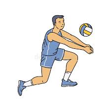
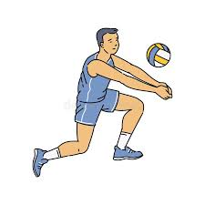

1. Serviciul
Există trei tipuri principale de servicii:
- Serviciu de jos: Cel mai simplu, pentru începători
- Serviciu de sus: Mai puternic și precis
- Serviciu flotor: Tehnică avansată fără rotire a mingii
Serviciul flotor este cel mai dificil de receptionat datorită traiectoriei impredictibile.
 
